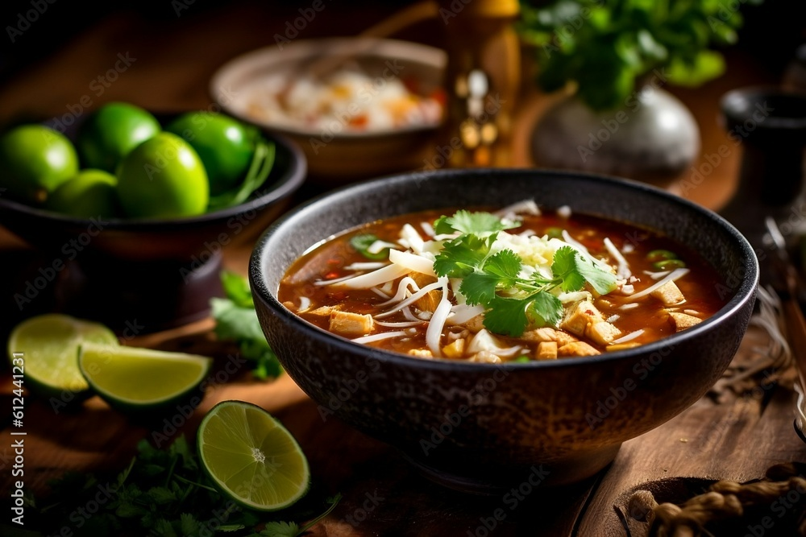

Platos Destacados

Tacos al Pastor

Pozole Rojo

Pako Meralgo es un restaurante que ofrecerá el servicio de alimentos y bebidas, el cual se considera como una idea alternativa e innovadora a las propuestas existentes dirigidas a las familias de Diriomo...
Satisfacer las necesidades gastronómicas Mexicana de nuestros clientes, ofreciendo alimentos y bebidas con la más alta calidad y sistemas tecnológicos...
Ser el mejor restaurante a nivel de municipio y el más preferido, como un grupo de trabajo original, sólido y profesional...